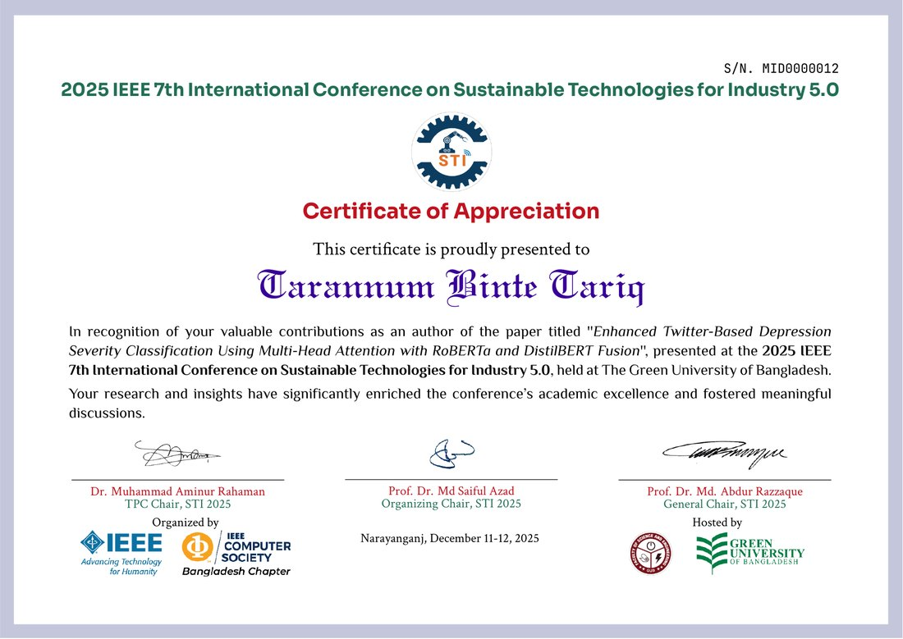
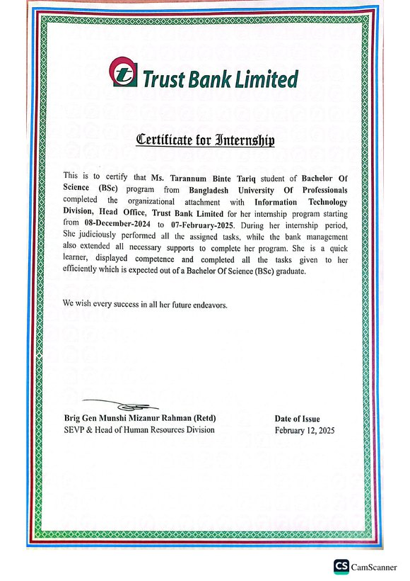
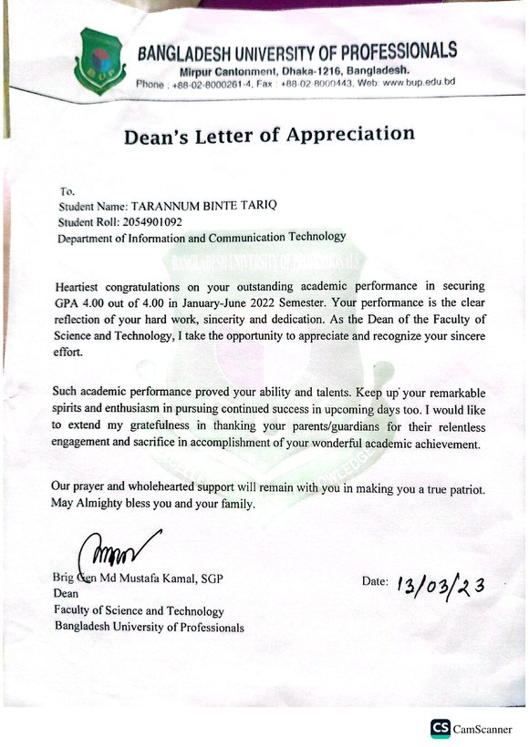
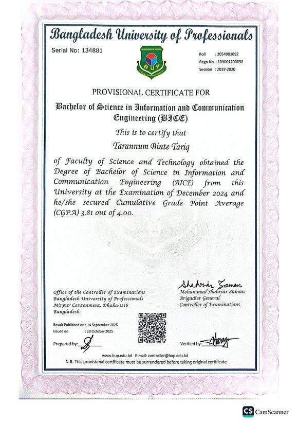

Low-Resource and Socially Grounded NLP
Transformer-based methods for multilingual Bangla/Banglish tasks, mental-health analysis, online fraud detection, and socially relevant text classification.
AI / ML / NLP / CV · Dhaka, Bangladesh
I work on Responsible Generative AI
M.Sc. student in Information and Communication Engineering at Bangladesh University of Professionals (BUP), with research experience in transformer-based NLP, multilingual text classification, Medical Computer Vision, diffusion models, and Trustworthy AI for socially impactful applications.
Research Profile
I am an M.Sc. student in Information and Communication Engineering at Bangladesh University of Professionals (BUP). I completed my B.Sc. in Information and Communication Engineering from BUP with a CGPA of 3.81/4.00.
My work spans transformer-based NLP, multilingual Bangla/Banglish text processing, depression and mental-health text analysis, online fraud detection, medical image analysis, retained foreign object detection, diffusion models, cultural bias evaluation, fairness, and model interpretability.
Research Agenda
Transformer-based methods for multilingual Bangla/Banglish tasks, mental-health analysis, online fraud detection, and socially relevant text classification.
Object detection and medical imaging workflows for retained or foreign object detection, with attention to responsible clinical decision support and deployment constraints.
Cultural fairness, default representation, interpretability, and evaluation of text-to-image diffusion and multimodal models across diverse social contexts.
Education
Relevant coursework includes Artificial Intelligence, Machine Learning, Data Mining, Cloud Computing, IoT, Database Management Systems, Digital Signal Processing, Operating Systems, Algorithms, Object-Oriented Programming, Linear Algebra, Probability and Statistics.
Publications
Publication cards include direct DOI links and copyable citation details so reviewers can quickly verify published work and understand current manuscripts separately.
Developed a multilingual BERT-based recruitment scam detection framework achieving 95.6% test accuracy on a 20,000-post Bangladesh job-market dataset.
Contribution: multilingual transformer-based framework development, dataset preparation, experimental evaluation, result interpretation, and manuscript preparation for applied online safety research.
Proposed a transformer-fusion framework using RoBERTa and DistilBERT with multi-head attention for depression severity classification.
Contribution: model design, preprocessing, training, evaluation, and severity-level analysis for mental-health related NLP; reported 96% accuracy in the CV.
Designed a hybrid Hierarchical Attention Network and DistilBERT architecture for depression detection from social media text.
Contribution: hybrid HAN-DistilBERT model design, data preprocessing, model training, evaluation, and result analysis.
Manuscripts Under Review
A clinically grounded multilingual depression-detection framework using PHQ-9-aligned social media data, Bangla–Banglish sentiment lexicon development, and a multi-input BiLSTM with multi-head attention model.
Contribution: multilingual depression-detection framework design, PHQ-9-aligned dataset preparation, Bangla–Banglish lexicon development, feature analysis, model evaluation, and manuscript preparation.
A compact dual-band 1×4 S-shaped microstrip array antenna with defected ground structure for mmWave 5G applications, achieving 10.31 dBi peak gain and 97.25% radiation efficiency at 33.16 GHz.
Contribution: antenna design analysis, dual-band performance evaluation, DGS-based impedance matching discussion, result interpretation, and manuscript preparation for mmWave 5G antenna research.
Featured Projects
Selected projects demonstrating my preparation in applied NLP, computer vision, medical AI, and Responsible Generative AI.
BERT-based NLP research project · BUP · 2025–2026
Developed a multilingual BERT-based framework to identify fraudulent recruitment posts in the Bangladesh job market, focusing on employment fraud, digital safety, and low-resource language settings.
Developed the framework, prepared the dataset pipeline, trained and evaluated the model, and analyzed results for publication.
Transformer-based NLP and mental health AI · 2024–2025
Contributed to HAN–DistilBERT and RoBERTa–DistilBERT fusion frameworks with multi-head attention for depression detection and severity-level classification from social media text.
Supported preprocessing, architecture development, training, evaluation, result analysis, and manuscript preparation.
Responsible generative AI research · 2026–Present
Investigating cultural and social bias in diffusion-based text-to-image systems using culturally diverse prompts, output evaluation, and responsible multimodal AI perspectives.
Exploring culturally diverse prompt design, visual representation analysis, and fairness-centered evaluation directions for generative AI.
Computer vision, medical imaging, and clinical AI · 2026–Present
Built a YOLO-based object detection workflow for medical images, including annotation preparation, train-validation splitting, model training, and detection-metric analysis for foreign-object localization.
Prepared annotations, organized train-validation splits, trained the model, reviewed detection metrics, and framed the work for responsible clinical decision support.
Teaching, Service & Professional Experience
Assist faculty with undergraduate tutorials, laboratory sessions, assignment evaluation, instructional materials, and student mentoring. Support students through problem-solving sessions and academic guidance in computing and engineering coursework.
Improved official website interface components using HTML, CSS, Bootstrap, and PHP, supporting responsive design, cross-browser compatibility, and enterprise-level web standards.
Organized technical workshops and seminars on emerging technologies and mentored junior members in research methods and technical skills.
Supported academic events, technical competitions, peer-learning sessions, and collaborative student activities.
Served as a liaison between students and faculty; coordinated academic schedules, assignments, and class communication.
Certificates
A clean certificate display for academic review. These documents support my publication contribution, internship experience, academic excellence, and B.Sc. completion record.

Certificate of Appreciation as an author of the paper on Twitter-based depression severity classification using RoBERTa-DistilBERT fusion.

Certificate for internship at the Information Technology Division, Head Office, Trust Bank Limited, covering the Dec. 2024-Feb. 2025 period.

Academic recognition from the Faculty of Science and Technology, BUP, for securing GPA 4.00/4.00 in the January-June 2022 semester.

Provisional certificate for Bachelor of Science in Information and Communication Engineering from BUP, showing CGPA 3.81/4.00.
Technical Research Skills
Python, Java, C, C++, JavaScript, PHP
BERT, DistilBERT, RoBERTa, Hierarchical Attention Networks, transformer-based text classification, sentiment analysis, multilingual NLP, mental-health text analysis.
YOLO, object detection, Vision Transformers, diffusion models, multimodal learning, text-to-image model evaluation, Responsible Generative AI.
Pandas, NumPy, PySpark, Kaggle, Jupyter Notebook, GitHub, Visual Studio Code, LaTeX, Microsoft Office.
MySQL, HTML5, CSS, Bootstrap, Selenium WebDriver, Playwright, automated testing.
Awards & Selected Projects
Contact
I welcome conversations about Low-Resource NLP, Medical Computer Vision, Responsible AI, Diffusion Models, and collaborative research.
Public page shows email, GitHub and Scholar only. The downloadable PDF CV is included for formal academic review.